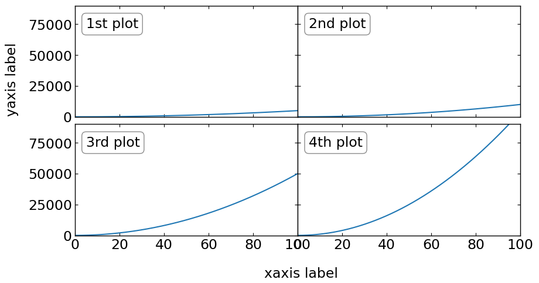

pyds.tools¶
- compilations of tools in python
pyds.tools.readcol¶
- read the columns with formats from ascii data
In [1]:
"""
Let's prepare the mock ascii data. Once you generate it, we can simply check it like this
"""
import os
# locate of sample data
fdir = os.environ['PYTHONDATA']
fname = fdir+'test_usr'
testf = open(fname,'r')
text = testf.readlines(); testf.close()
for itext in text:
print itext
12.3 4134 232. 23d3 asdf
142. 233 1d12 NAN dfds
2342. 12.2 2342. 12e1 zxcve
211. 123 32432. 32423 kas
423. 454 232 2321. cxi
In [2]:
""" read columns of interest
format: i,f,s,x for integer,float,string and dummy(i.e. no-read), respectively
Note that 'NAN' is only readable in 'float' type.
If 'NAN' is read as 'integer' type, it would produce weird large number.
(This is not bug, but just the intrinsic treatment of the python until now.)
"""
import os
from pyds.tools import readcol
fdir = os.environ['PYTHONDATA']
fname = fdir+'test_usr'
a,b,c = readcol(fname,format=['i','x','x','f','s'],nskip=1)
print a,b,c
[ 142 2342 211 423] [ nan 120. 32423. 2321.] ['dfds' 'zxcve' 'kas' 'cxi']
pyds.tools.axpos¶
- set the multiplots in a more intutive and easy way.
In [3]:
""" First method of drawing multiplots:
this can be used any number of size elements (i.e. pltxs=[...],pltys=[...])
- Using
>>> axset = axpos(...)
>>> plt.figure(...)
>>> ax = plt.axes(axset.pos(...))
"""
import matplotlib.pyplot as plt
import numpy as np
from pyds.tools import axpos
%matplotlib inline
bbox_props = dict(boxstyle="round", fc="w", ec="0.5", alpha=0.9)
xlim = [0,100]
ylim = [0,90000]
x = np.linspace(0,100,5000)
y1 = x**2/2.
y2 = x**2
y3 = x**2*5
y4 = x**2*10
# initialize the configuration
axset = axpos(22,pltx0=[30,10],plty0=[20,10],pltxs=[100,50],pltys=[100,50],pltxw=0,pltyw=3)
# axes positions
# [ 1,1 1,2
# 2,1 2,2 ]
# generate figure
plt.figure(figsize=(9,9*axset.winys/axset.winxs))
# first plot
ax1 = plt.axes(axset.pos(221))
ax1.plot(x,y1)
ax1.set_xlim(xlim[0], xlim[1])
ax1.set_ylim(ylim[0], ylim[1])
ax1.annotate('1st plot',(0.05,0.9),xycoords='axes fraction',ha="left",bbox=bbox_props)
plt.setp(ax1.get_xticklabels(), visible=False)
# second plot
ax2 = plt.axes(axset.pos(222))
ax2.plot(x,y2)
ax2.set_xlim(xlim[0], xlim[1])
ax2.set_ylim(ylim[0], ylim[1])
ax2.annotate('2nd plot',(0.1,0.9),xycoords='axes fraction',ha="left",bbox=bbox_props)
plt.setp(ax2.get_xticklabels(), visible=False)
plt.setp(ax2.get_yticklabels(), visible=False)
# third plot
ax3 = plt.axes(axset.pos(223))
ax3.plot(x,y3)
ax3.set_xlim(xlim[0], xlim[1])
ax3.set_ylim(ylim[0], ylim[1])
ax3.annotate('3rd plot',(0.05,0.8),xycoords='axes fraction',ha="left",bbox=bbox_props)
# forth plot
ax4 = plt.axes(axset.pos(224))
ax4.plot(x,y4)
ax4.set_xlim(xlim[0], xlim[1])
ax4.set_ylim(ylim[0], ylim[1])
ax4.annotate('4th plot',(0.1,0.8),xycoords='axes fraction',ha="left",bbox=bbox_props)
plt.setp(ax4.get_yticklabels(), visible=False)
# set the figure label
plt.annotate('yaxis label',(0.01,0.6),xycoords='figure fraction',rotation='vertical')
plt.annotate('xaxis label',(0.49,0.02),xycoords='figure fraction')
Out[3]:
<matplotlib.text.Annotation at 0x7f43080995d0>

In [4]:
""" Even drawing part of plots is possible """
import matplotlib.pyplot as plt
import numpy as np
from pyds.tools import axpos
%matplotlib inline
bbox_props = dict(boxstyle="round", fc="w", ec="0.5", alpha=0.9)
xlim = [0,100]
ylim = [0,90000]
x = np.linspace(0,100,5000)
y1 = x**2/2.
y2 = x**2
y3 = x**2*5
y4 = x**2*10
# initialize the configuration
axset = axpos(22,pltx0=[30,10],plty0=[20,10],pltxs=[100,50],pltys=[100,50],pltxw=0,pltyw=3)
# axes positions
# [ 1,1 1,2
# 2,1 2,2 ]
# generate figure
plt.figure(figsize=(9,9*axset.winys/axset.winxs))
# first plot
ax1 = plt.axes(axset.pos(221))
ax1.plot(x,y1)
ax1.set_xlim(xlim[0], xlim[1])
ax1.set_ylim(ylim[0], ylim[1])
ax1.annotate('1st plot',(0.05,0.9),xycoords='axes fraction',ha="left",bbox=bbox_props)
plt.setp(ax1.get_xticklabels(), visible=False)
# second plot
ax2 = plt.axes(axset.pos(222))
ax2.plot(x,y2)
ax2.set_xlim(xlim[0], xlim[1])
ax2.set_ylim(ylim[0], ylim[1])
ax2.annotate('2nd plot',(0.1,0.9),xycoords='axes fraction',ha="left",bbox=bbox_props)
plt.setp(ax2.get_xticklabels(), visible=False)
plt.setp(ax2.get_yticklabels(), visible=False)
# third plot
ax3 = plt.axes(axset.pos(223))
ax3.plot(x,y3)
ax3.set_xlim(xlim[0], xlim[1])
ax3.set_ylim(ylim[0], ylim[1])
ax3.annotate('3rd plot',(0.05,0.8),xycoords='axes fraction',ha="left",bbox=bbox_props)
# set the figure label
plt.annotate('yaxis label',(0.01,0.6),xycoords='figure fraction',rotation='vertical')
plt.annotate('xaxis label',(0.49,0.02),xycoords='figure fraction')
Out[4]:
<matplotlib.text.Annotation at 0x7f4303e96e10>
In [5]:
""" Second method of drawing multiplots:
All plosts should be in same size (i.e. pltxs=single number, pltys=single number)
- Using
>>> axset = axpos(...)
>>> fig =plt.figure(...)
>>> ax=fig.add_subplot(...)
>>> axpos = axset.adjust_subplots(fig)
"""
import matplotlib.pyplot as plt
import numpy as np
from pyds.tools import axpos
%matplotlib inline
bbox_props = dict(boxstyle="round", fc="w", ec="0.5", alpha=0.9)
xlim = [0,100]
ylim = [0,90000]
x = np.linspace(0,100,5000)
y1 = x**2/2.
y2 = x**2
y3 = x**2*5
y4 = x**2*10
# initialize the configuration
axset = axpos(22,pltx0=[100,10],plty0=[60,10],pltxs=300,pltys=150,pltxw=0,pltyw=10)
fig = plt.figure(figsize=(9,9*axset.winys/axset.winxs))
# first plot
ax1 = fig.add_subplot(221)
ax1.plot(x,y1)
ax1.set_xlim(xlim[0], xlim[1])
ax1.set_ylim(ylim[0], ylim[1])
ax1.annotate('1st plot',(0.05,0.8),xycoords='axes fraction',ha="left",bbox=bbox_props)
plt.setp(ax1.get_xticklabels(), visible=False)
# second plot
ax2 = fig.add_subplot(222, sharey=ax1)
ax2.plot(x,y2)
ax2.set_xlim(xlim[0], xlim[1])
ax2.set_ylim(ylim[0], ylim[1])
ax2.annotate('2nd plot',(0.05,0.8),xycoords='axes fraction',ha="left",bbox=bbox_props)
plt.setp(ax2.get_xticklabels(), visible=False)
plt.setp(ax2.get_yticklabels(), visible=False)
# third plot
ax3 = fig.add_subplot(223, sharex=ax1)
ax3.plot(x,y3)
ax3.set_xlim(xlim[0], xlim[1])
ax3.set_ylim(ylim[0], ylim[1])
ax3.annotate('3rd plot',(0.05,0.8),xycoords='axes fraction',ha="left",bbox=bbox_props)
# forth plot
ax4 = fig.add_subplot(224, sharex=ax2, sharey=ax3)
ax4.plot(x,y4)
ax4.set_xlim(xlim[0], xlim[1])
ax4.set_ylim(ylim[0], ylim[1])
ax4.annotate('4th plot',(0.05,0.8),xycoords='axes fraction',ha="left",bbox=bbox_props)
plt.setp(ax4.get_yticklabels(), visible=False)
# set the figure label
plt.annotate('yaxis label',(0.01,0.6),xycoords='figure fraction',rotation='vertical')
plt.annotate('xaxis label',(0.49,0.02),xycoords='figure fraction')
# adjust margin
axset.subplots_adjust(fig)
